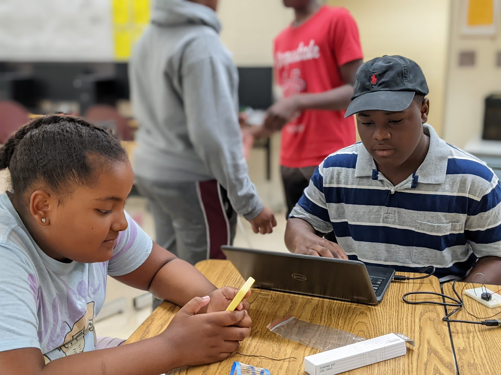
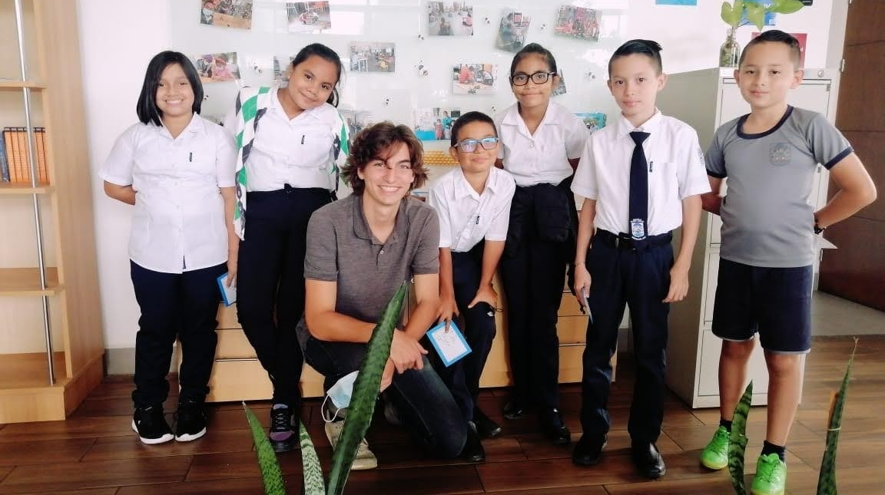

2019 - Present
Gordon College, Wenham MA
Computer Science (BS) and Economics, Spanish minor.
Gordon College, Wenham MA
Computer Science (BS) and Economics, Spanish minor.
WPS Summer Enrichment Robotics Teacher
Taught a summer enrichment program in robotics for local middle school students.
Created 24 hours of curriculum with the goal of introducing kids of all backgrounds and levels of experience to robotics. Taught four sessions and focused on experiential, hands on learning with VEX robotics and basic Arduino projects.
ICADS Spanish Language & Society Study Abroad in Costa Rica
Immersive study of global social and economic issues from alternative perspectives.
Intensive Spanish study, worked with a community development center that bridges the gap between one of the wealthiest and poorest areas of San José.
Gordon 360 Jenzabar Intern and Technical Lead
Assisted other student developers; personal work included progress migrating API from .NET 4.6 to .NET Core 5, stylesheet migration to CSS Modules, and new UI features.
Suffered a concussion during the previous spring, so this summer also included work on spring semester classes.
Resident Advisor
Served as Nyland 3W RA at Gordon College during academic year of Covid-19.
Gordon 360 Team Developer
Worked on a team developing Gordon College's student site. Migrated a Student News platform in 2020 and worked fully online during Covid-19 outbreak.
Developed IBRI Organization Site
Updated website for the Interdisciplinary Biblical Research Institute (continuous development)
Research Intern, UHart REU
Researched and modeled feedback control in human movement. I worked with MATLAB and Adobe Illustrator to generate and analyze perturbation data, helping to write up and create figures for research paper.
The final research paper was published in 2021.
Developed White Oak Project Site
Worked with a nonprofit with the goal of reforestation along New York canals. This site is now not being used as SUNY Oswego has since begun supporting the project.
Developed a Fundraising Database
Created online database platform for robotics team to track funds and streamline that process.